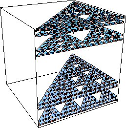

| Compute the box-counting dimension of the product of a Sierpinski gasket and a Cantor middle-halves set. The Cantor middle-halves set is generated by the process of removing the middle half, leaving two intervals of size one-quarter the original. |
| What cube side lengths should be used? What is the pattern relating N(r) and r? |
| Here are the solutions. |